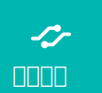
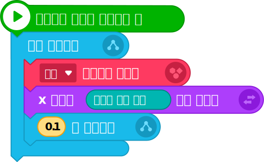

1시스템 구성
프로그램의 실행 화면을 구성해 보자.
| 구분 | 이미지 | 설명 |
|---|---|---|
| 입력 |
마이크(센서) 응원 소리를 입력받는 하드웨어 |
|
| 출력 |  |
걷고 있는 사람(1) 오브젝트 옆 반 달리기 선수 지영이 오브젝트 |
|
걷고 있는 사람(2) 오브젝트 우리 반 달리기 선수 서준이 오브젝트 |
2프로그래밍 준비
- ①USB 케이블을 이용하여 마이크로비트를 컴퓨터와 연결한다.
- ②하드웨어를 연결하여 마이크로비트 관련 블록을 사용할 수 있도록 한다.
3프로그래밍
①시스템 구성하기
- [+오브젝트 추가하기] 버튼을 눌러 ‘걷고 있는 사람(1)’, ‘걷고 있는 사람(2)’ 오브젝트를 화면에 추가한다.
-
오브젝트 속성 창에서 오브젝트의 위치를 설정한다.
※ 오브젝트의 위치
오브젝트의 위치 오브젝트 축 값 걷고 있는 사람(1) X -210.0 Y -20.0 걷고 있는 사람(2) X -160.0 Y -60.0 - [+오브젝트 추가하기] 버튼을 눌러 ‘실내체육관’을 배경으로 설정한다.
②사용할 명령어 블록 알아보기
| 명령어 카테고리 | 블록 이미지 | 설명 |
|---|---|---|
| 시작하기 버튼을 누르면 아래에 연결된 블록들을 실행한다. | ||
| 감싸고 있는 블록들을 계속해서 반복 실행한다. | ||
| 입력한 시간만큼 기다린 후 다음 블록을 실행한다. | ||
| 오브젝트의 X 좌표를 입력한 값만큼 바꾼다. | ||
| 오브젝트의 모양을 이전 또는 다음으로 바꾼다. | ||
|  | 마이크에서 측정된 소리의 값이 크기 값이다. |
③프로그램 작성하기
| 오브젝트 | 명령 블럭 |
|---|---|
|

|
|

|